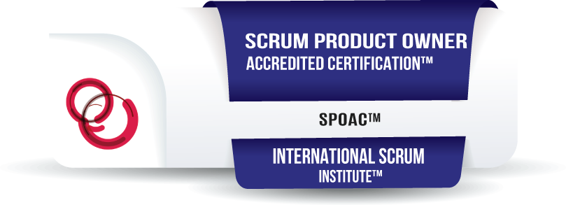

Helga Liliána Dani

I am a product owner who is creative, has the ability to learn quickly and wants to continuously improve. My goal is to be employed at a company where I can continue to develop professionally and solve users' problems with my user-centered thinking, while keeping the company's economic interests first.
WORK EXPERIENCE
Product Owner
Kulcs-Soft Nyrt. (2021-2023)
After completing the SPOAC™ exam, I started working as a product owner
My main tasks:
- Understanding the needs of the market, stakeholders and customers
- Defining the problems and goals
- Product backlog management and task prioritization (Azure Boards)
- Examination of competitors
- Specify functions based on user needs, whenever I can, I also create UI/UX plans for easier understanding (Figma)
- Planning iterations (two-week sprints) and prioritizing tasks
- Collection and processing of testers and users feedback
- Presentation of product increment to stakeholders (Sprint Demo)
Junior Product Manager
Kulcs-Soft Nyrt. (2020-2023)
- In the beginning, I worked as a customer service and marketing assistant
- After that, I started helping the development team by designing new features and analyzing competitors
- Defining long-term development goals, directions and priorities with management members
- Preparation of marketing campaigns, creation of graphic materials
- Creating knowledge bases
- Customer service training
Project assistant
Local Government of Okány (2019- 2020)
- Continuous monitoring of EU and domestic tender opportunities
- Participation in the compilation of tender documentation
- Professional assistance for the work of the implementers, meeting deadlines and keeping the budget in mind
- Management of financial documents generated during the implementation of tenders
- Editing the local website
- After the 2019 mayoral election, I was asked to be an external committee member of the Administrative and Economic Committee of the Municipality of Okány
EDUCATION
Scrum Product Owner Accredited Certification™
International Scrum Institute™ (Scrum Institute)
June 2021

Product owner (AG-PO) training
Training360
March 2021
Supply Chain Management MSc
University of Debrecen (UD)-Faculty of Economics and Business
2019-2020
Rural Development Engineer Bsc
University of Debrecen (UD)-Faculty of Economics and Business
2015-2019
SKILLS
Personal Skills
- Proactivity
- Good presentation skills
- Creativity
- Assertive communication
- Analytic thinking
Professional skills
- Scrum metodology
- Azure Boards
- JIRA
- Figma
Language
- Hungarian (native)
- English (conversational, B2)
Other Skills
- Driving licence, category B
- Advanced, confident use of Microsoft Excel, Word and PowerPoint